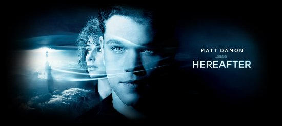

Más allá de la vida
Feb 13, 2011 · CommentsHobbies

Como queda poco para los Oscar era buen momento para ir a ver las películas nominadas. No obstante, en mi cine habitual suelen retirar de cartelera el buen material con sorprendente rapidez dejando la carroña típica. Eso y el hecho de tener que elegir la intersección de los gustos entre los miembros del grupo hizo que acabásemos yendo a Más allá de la vida, dirigida por el veterano Clint Eastwood y nominada por los mejores efectos visuales. Craso error.
Más allá de la vida cuenta las historias de tres protagonistas que acaban encontrándose a través de la famosa técnica del calzador en el último momento. George Logan (Matt Damon) es un parapsicólogo de San Francisco que contacta con los familiares difuntos de aquellos que toca. Considera que su habilidad es una maldición y le impide llevar una vida normal por lo que lo deja definitivamente. Marie (Cécile de France) es una periodista parisina que pasó varios minutos técnicamente muerta tras un tsunami y el contacto con el más allá le cambia para siempre. Marcos (Frankie McLaren) es un niño londinense cuya madre es drogadicta y pierde a su hermano gemelo en un accidente de tráfico.
Estaremos de acuerdo en que hay diversos tipos de cine, por ejemplo, algunas películas buscan entretener a través el humor o la acción sin que nos hagan pensar demasiado. En cambio, otras pretenden evocar sentimientos o inducirnos a la meditación. Comprendo perfectamente que las últimas sean más duras de seguir y requieran esfuerzo extra por parte del espectador. Más allá de la vida busca que reflexionemos sobre la vida y la muerte aunque se muestra terriblemente torpe es ese aspecto. Es lenta, dolorosamente lenta y para colmo sales de la sala con la sensación de que no te han contado nada.
A su favor he de decir que algunas escenas están bien llevadas, son creíbles y su carga dramática nos alcanza. No deben confundirse porque en absoluto representa la tónica general. En la mayor parte de los casos recurre al tópico fácil sin tratar de ir más allá (menudo juego de palabras que me he sacado de la manga). El inexpresivo Matt Damon no pega ni con cola en un largometraje dramático como este. Nadie puede negar que es un actor estupendo para la trilogía Bourne pero en este caso no consigue conectar con el personaje ni con la audiencia, a mí me ha dejado completamente indiferente.
Creo que puedo resumir de forma acertada mi reseña diciendo que la película son dos horas que se viven como cuatro. Tiene un único objetivo en el que fracasa estrepitosamente. Imagino que la nominación a los mejores efectos visuales corresponden a los primeros cinco minutos de película en los que aparece el tsunami porque el resto no tiene nada. Debe estar muy malita la cosa en Hollywood para que Más allá de la vida aparezca en esta categoría. Si pueden evitarla, no lo duden, háganlo.